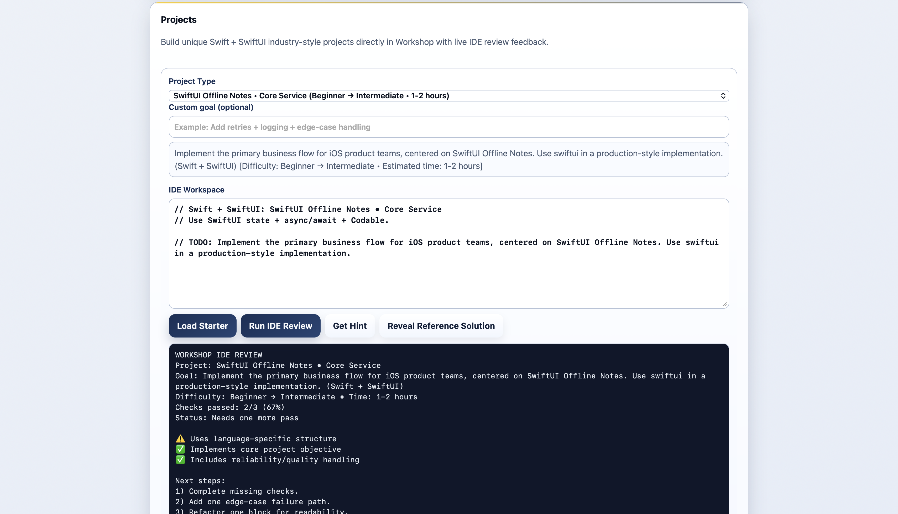
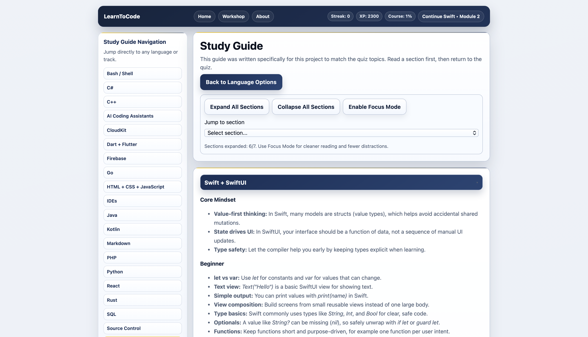
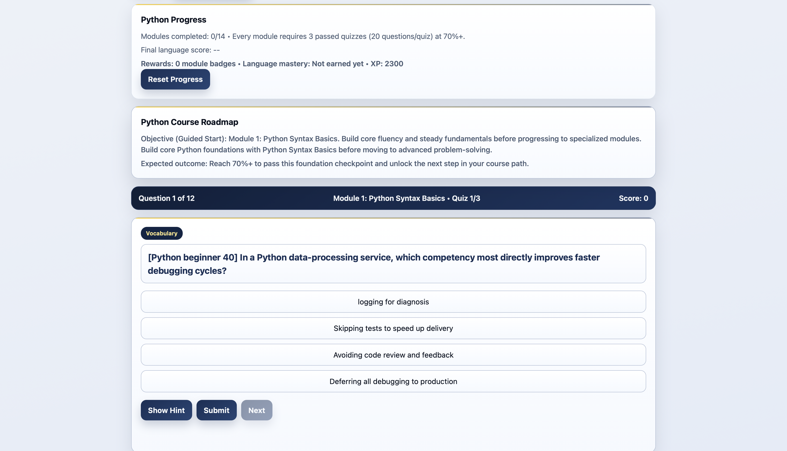

LearnToCode
A Visual Studio Code-based learning project focused on building practical coding fluency through hands-on implementation.
Problem
Most coding tutorials lack real practice and feedback. I wanted a way to build fluency by actually solving problems, tracking progress, and learning through hands-on implementation in a real coding environment.
Project Snapshot
- Platform: Web (HTML/CSS/JS), runs locally in browser
- Type: Programming fundamentals trainer
- Focus: Multi-language quizzes, study guides, unit progression, saved mastery
- Team: Solo
- Timeline: February 2026 – March 2026
Role
Designer, developer, and curriculum author — responsible for all UX, quiz logic, study content, and progress tracking features.
Demo & Key Screens
Demo: Interactive home, study guide, and quiz modules.

Main Home: Modern landing page for LearnToCode.

Projects: Track your progress across multiple languages.

Study Guide: Jump to any topic or language.

Quiz: Mixed question types and instant feedback.
Core Features
- Practice programming basics in Swift, HTML/CSS/JS, React, Python, TypeScript, Java, C#, SQL, and more
- 14-module progression per language, with saved mastery and badge rewards
- Multiple question types: vocab, true/false, output prediction, debug, code-writing
- Original study guide content for every language and topic
- Progress tracked in local storage, no login required
- Accessible, mobile-friendly UI with clear navigation
Technical Highlights
- Vanilla JS app structure, no build step or dependencies
- Quiz logic and progress tracking in app.js and js/pages/*
- Study guide navigation and content in study-guide.html
- Responsive CSS for cards, progress grid, and navigation
Code Highlights
Sample JavaScript for progress tracking and feedback:
// Save user progress and show feedback
function saveProgress(language, module, score) {
const key = `${language}-module-${module}`;
localStorage.setItem(key, score);
showToast(`Progress saved for ${language} module ${module}: ${score}%`);
}
function showToast(message) {
const toast = document.createElement('div');
toast.className = 'toast';
toast.textContent = message;
document.body.appendChild(toast);
setTimeout(() => toast.remove(), 2500);
}
Constraints
Keep the app simple enough to run locally with no build tools, while supporting multiple languages, question types, and persistent progress.
Key Decisions
- Used local storage for progress so users can resume anytime
- Wrote original study guide content to match quiz topics
- Kept UI minimal and mobile-friendly for fast access
- Chose vanilla JS for maximum portability and zero setup
Outcome
LearnToCode is a practical, accessible way to build programming fluency. It’s used for interview prep, skill refresh, and onboarding new developers. All content and logic are original and tailored for hands-on learning.